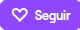
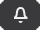

Minecraft de un modo nunca visto.
Editar el codigo de Minecraft ahora es la principal mecánica.


Dirígete a Twitch y crea una cuenta con el botón de arriba a la derecha.
Si ya tienes una cuenta inicia sesión con el botón de arriba a la derecha. Si no ves ninguno de los dos botones puede que no estés en el sitio adecuado o que ya tengas una sesión iniciada.
Entra en mi canal y haz click en .
No te pierdas ninguna emisión pulsando en .
Tienes diferentes formas de ayudar a seguir creando contenido
y a mejorar la calidad.
Todo listo para ver la próxima emisión.